Annotations
Annotations attach metadata to a SpaceDesc subtree without changing its geometry. build(layout) lowers them into standard SpaceConnections — actual doors, windows, and arches on the built walls — so the same annotated design produces the same openings on every backend.
house = (room(:living, :living_room, 5.0, 4.0) |
room(:kitchen, :kitchen, 3.5, 4.0)) |>
d -> connect_spaces(d, :living, :kitchen; kind=:arch) |>
d -> connect_exterior(d, :living; kind=:door, face=:south) |>
d -> no_windows(d, :kitchen) # kitchen is an interior galley
build(layout(house)) # exterior door on the south facade; living/kitchen
# wall elided by the arch; no kitchen windows
# Remove any connection between neighbouring rooms, including one
# declared by a connect_spaces elsewhere in the tree:
disconnect(house, :living, :kitchen)Nested Annotated wrappers compose transparently: layout walks through them and collect_annotations gathers them for build.
Lowering semantics
build(l::Layout) computes effective per-storey connections from the storeys' explicit connections plus the layout's annotations. The lowering is pure — it never mutates the storeys, so rebuilding (as validate(l) does repeatedly) never duplicates openings. It proceeds in two phases:
- Additive — every
connect_spaces/connect_exteriorannotation adds a connection, in tree order (outermost wrapper first).connect_spacesmirrorsadd_door/add_window/add_archdefaults (width/heightderive a family from the current default);connect_exteriorplacescountopenings at even fractions along the chosen face (:north/:south/:east/:westare bounding-box faces, north = +y;:autopicks the longest exterior edge). - Subtractive — every
disconnectremoves any interior connection between its two spaces, andno_windowsremoves every window (interior or exterior) touching its space. Removals run after all additions, so they win regardless of how theAnnotatedwrappers were nested; removing a connection that doesn't exist is a no-op.
Misuse fails loudly with an ArgumentError instead of silently producing nothing: unknown space ids (note that ids inside repeat_unit exist only in their per-copy unit_<i>/<id> scoped form), interior connections between spaces on different storeys, unsupported kinds or faces, count < 1, and width/height combined with kind=:arch (an arch elides the wall and carries no family).
Known gap: annotations attached inside a repeat_unit unit or a grid cell are not scoped per copy — a unit-internal annotation references the unscoped id and therefore errors (repeat) or is not collected at all (grid). Annotate the assembled tree from outside, using the scoped unit_<i>/<id> ids.
connect_spaces marks an interior boundary as needing a door / arch:

connect_exterior marks an exterior face as needing a window or door:

Types
KhepriBase.DesignAnnotation — Type
DesignAnnotationAbstract supertype for annotations attached to a space description tree. Annotations describe connections, disconnections, and other metadata. The name is qualified to avoid clashing with KhepriBase.Annotation, which is the BIM annotation type used for labels, dimensions, and so on.
KhepriBase.ConnectAnnotation — Type
ConnectAnnotation <: DesignAnnotationDeclares a connection (door, window, or arch) between two named spaces.
KhepriBase.ConnectExteriorAnnotation — Type
ConnectExteriorAnnotation <: DesignAnnotationDeclares an exterior opening (door or window) on a specific face of a space.
KhepriBase.DisconnectAnnotation — Type
DisconnectAnnotation <: DesignAnnotationRemoves any default connection between two adjacent spaces.
KhepriBase.NoWindowsAnnotation — Type
NoWindowsAnnotation <: DesignAnnotationSuppresses automatic window generation for the given space.
Functions
KhepriBase.connect_spaces — Function
connect_spaces(desc, from, to; kind=:door, width=nothing, height=nothing)Annotate a connection (e.g. door or opening) between zones from and to.
Named connect_spaces rather than connect so the export does not shadow Sockets.connect inside the KhepriBase module (a bare connect there would otherwise resolve to this 5-arg design combinator and silently break socket backend setup). See also connect_exterior, disconnect.
KhepriBase.connect_exterior — Function
connect_exterior(desc, space_id; kind=:window, face=:auto, count=nothing, width=nothing, height=nothing)Annotate a connection from zone space_id to the building exterior. kind must be :door or :window; anything else raises an ArgumentError when the layout is built.
KhepriBase.disconnect — Function
disconnect(desc, from, to)Remove any connection between zones from and to.
KhepriBase.no_windows — Function
no_windows(desc, space_id)Remove every window connection touching zone space_id — interior or exterior, regardless of where in the description tree it was declared.